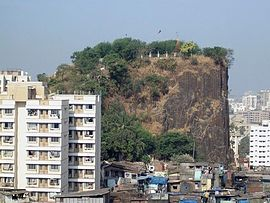
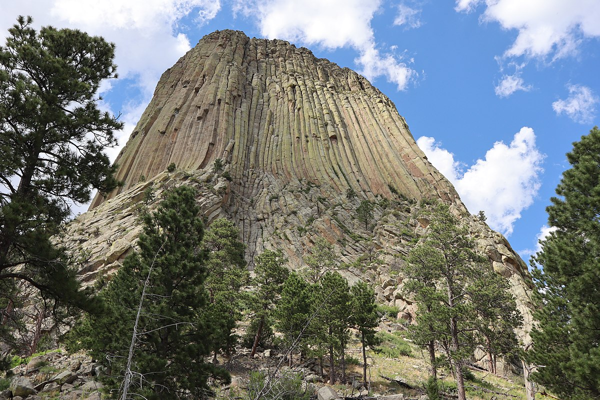
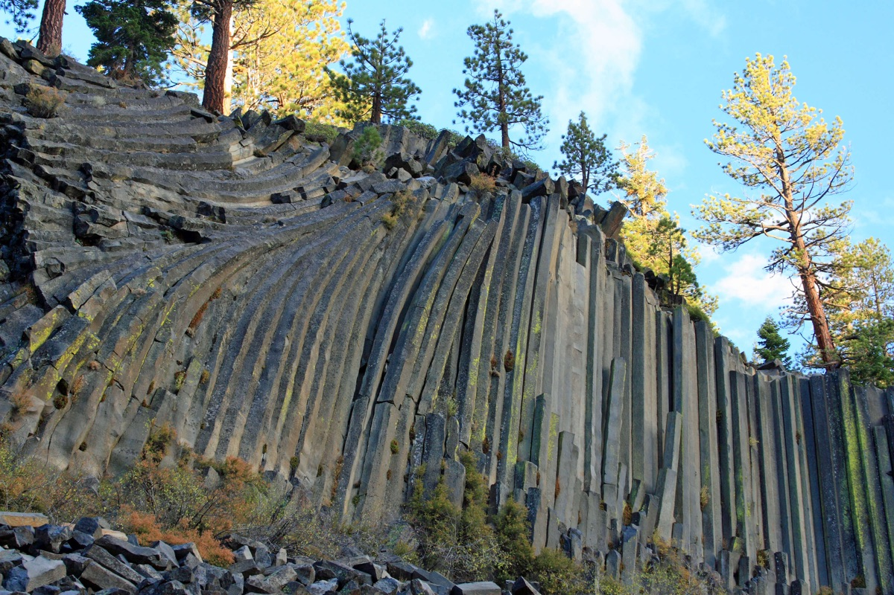

A 66-million-year-old monolith in the heart of Mumbai — one of only three such geological formations in the world.
Introduction
A rare geological marvel and Grade II heritage structure

Gilbert Hill - Reference: Wikipedia
Gilbert Hill - Mumbai, India
Gilbert Hill is a 200 ft (61 m) monolith column of black basalt rock at Andheri, in Mumbai, India. The rock has a sheer vertical face and was formed when molten lava was squeezed out of the Earth's clefts during the Mesozoic Era about 66 million years ago. The volcanic eruptions were also responsible for the destruction of plant and animal life during the era.
According to experts, this rare geological phenomenon was the remnant of a ridge and had clusters of vertical columns in nearby Jogeshwari which were quarried off two decades ago. These vertical columns are similar to the Devils Tower National Monument, Wyoming, and the Devils Postpile National Monument, eastern California, USA.
Gilbert Hill was declared a National Park in 1952 by the Central Government under the Forest Act. In 2007, after years of lobbying by geologists, the hill was declared a Grade II heritage structure by the Municipal Corporation of Greater Mumbai (MCGM), and all quarrying and other activities around the monument were prohibited.
Efforts are being made to convert Gilbert Hill into a tourist attraction and include it as a stop on a tour of Mumbai by Maharashtra Tourism Development Corporation.

Devils Tower
Wyoming, United States
Devils Tower is a butte, possibly laccolithic, composed of igneous rock in the Bear Lodge Ranger District of the Black Hills, northeastern Wyoming. It rises 1,267 feet (386 m) above the Belle Fourche River, standing 867 feet (265 m) from summit to base.
Devils Tower was the first United States national monument, established on September 24, 1906 . The monument's boundary encloses an area of 1,347 acres (545 ha).
In recent years, about 1% of the monument's 400,000 annual visitors climbed Devils Tower, mostly using traditional climbing techniques.
Devil's Tower - Reference: Wikipedia

Devil Postpile
California, United States
Devils Postpile is elevated 7,500 feet above sea-level, located near Mammoth Mountain in eastern California. The monument protects an unusual rock formation of columnar basalt.
Devils Postpile is a National Monument. The monument encompasses an area of 798 acres (323 ha) .
In 2017, more than 100,000 visitors is recorded to have been visited the monument. It also includes another main tourist attractions, Rainbow Falls, a waterfall on the Middle Fork of the San Joaquin River.
Devil's Postpile - Reference: Wikipedia